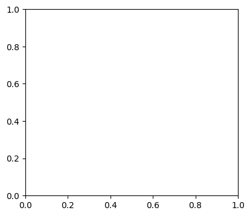
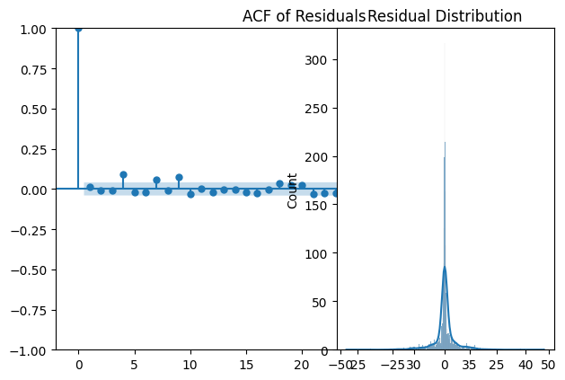
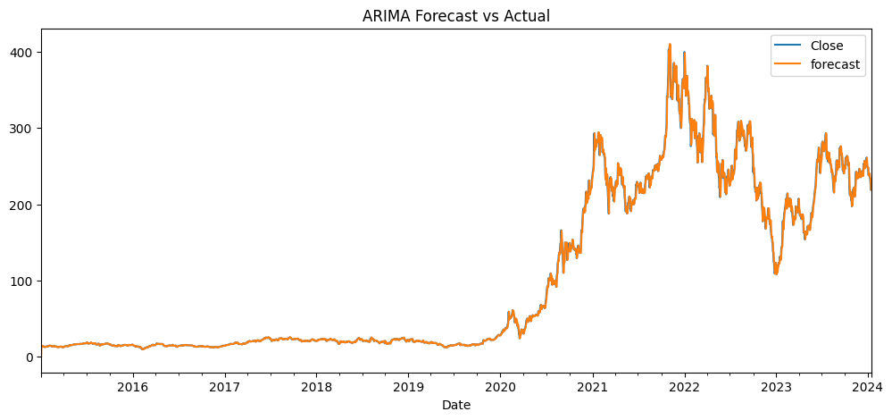

Classical Time Series Models
import pandas as pd
import numpy as np
import matplotlib.pyplot as plt
import seaborn as sns
from statsmodels.tsa.arima.model import ARIMA
from statsmodels.graphics.tsaplots import plot_acf, plot_pacf
from statsmodels.stats.diagnostic import acorr_ljungbox
from sklearn.metrics import mean_squared_error, mean_absolute_error
import os
# Load cleaned data
data_path = "../data/processed/Tesla_Cleaned.csv"
df = pd.read_csv(data_path, parse_dates=["Date"], index_col="Date")
df = df.asfreq('B') # business day frequency
df['Close'] = df['Close'].interpolate()
plot_acf(df["Close"].dropna(), lags=40)
plt.title("ACF of Close Prices")
plt.show()
plot_pacf(df["Close"].dropna(), lags=40)
plt.title("PACF of Close Prices")
plt.show()


# Fit ARIMA model – example with (1,1,1)
model = ARIMA(df["Close"], order=(1,1,1))
results = model.fit()
print(results.summary())
C:\Users\sospeter\PycharmProjects\pythonProject\.venv1\Lib\site-packages\statsmodels\tsa\statespace\sarimax.py:966: UserWarning: Non-stationary starting autoregressive parameters found. Using zeros as starting parameters.
warn('Non-stationary starting autoregressive parameters'
C:\Users\sospeter\PycharmProjects\pythonProject\.venv1\Lib\site-packages\statsmodels\tsa\statespace\sarimax.py:978: UserWarning: Non-invertible starting MA parameters found. Using zeros as starting parameters.
warn('Non-invertible starting MA parameters found.'
SARIMAX Results
==============================================================================
Dep. Variable: Close No. Observations: 2358
Model: ARIMA(1, 1, 1) Log Likelihood -7378.920
Date: Wed, 07 May 2025 AIC 14763.839
Time: 08:49:13 BIC 14781.135
Sample: 01-02-2015 HQIC 14770.137
- 01-16-2024
Covariance Type: opg
==============================================================================
coef std err z P>|z| [0.025 0.975]
------------------------------------------------------------------------------
ar.L1 -0.7061 0.149 -4.726 0.000 -0.999 -0.413
ma.L1 0.6789 0.155 4.369 0.000 0.374 0.983
sigma2 30.6735 0.330 92.939 0.000 30.027 31.320
===================================================================================
Ljung-Box (L1) (Q): 0.43 Jarque-Bera (JB): 15947.58
Prob(Q): 0.51 Prob(JB): 0.00
Heteroskedasticity (H): 539.95 Skew: -0.10
Prob(H) (two-sided): 0.00 Kurtosis: 15.74
===================================================================================
Warnings:
[1] Covariance matrix calculated using the outer product of gradients (complex-step).
residuals = results.resid
plt.figure(figsize=(10, 4))
plt.subplot(121)
plot_acf(residuals.dropna(), lags=40)
plt.title("ACF of Residuals")
plt.subplot(122)
sns.histplot(residuals, kde=True)
plt.title("Residual Distribution")
plt.tight_layout()
plt.show()
# Ljung-Box test
lb_test = acorr_ljungbox(residuals, lags=[10], return_df=True)
print("Ljung-Box Test:\n", lb_test)


Ljung-Box Test:
lb_stat lb_pvalue
10 46.134845 0.000001
df["forecast"] = results.predict(start=0, end=len(df)-1)
rmse = np.sqrt(mean_squared_error(df["Close"], df["forecast"]))
mae = mean_absolute_error(df["Close"], df["forecast"])
mape = np.mean(np.abs((df["Close"] - df["forecast"]) / df["Close"])) * 100
print(f"RMSE: {rmse:.4f}, MAE: {mae:.4f}, MAPE: {mape:.2f}%")
df[["Close", "forecast"]].plot(figsize=(12,5), title="ARIMA Forecast vs Actual")
plt.show()
RMSE: 5.5454, MAE: 2.7561, MAPE: 2.42%

import pandas as pd
from statsmodels.tsa.arima.model import ARIMA
import matplotlib.pyplot as plt
from statsmodels.graphics.tsaplots import plot_acf
import os
# Load the cleaned dataset using the absolute path
df = pd.read_csv(
"C:/Users/sospeter/PycharmProjects/pythonProject/tesla-stock-forecasting/data/processed/Tesla_Cleaned.csv",
parse_dates=["Date"],
index_col="Date"
)
# Fit ARIMA(1,1,1)
model = ARIMA(df["Close"], order=(1, 1, 1))
results = model.fit()
# Extract residuals
residuals = results.resid
# Save ACF plot of residuals
fig = plot_acf(residuals)
os.makedirs("results/figures", exist_ok=True)
fig.savefig("results/figures/arima_residual_acf.png")
plt.close()
print("✅ Residual ACF plot saved.")
C:\Users\sospeter\PycharmProjects\pythonProject\.venv1\Lib\site-packages\statsmodels\tsa\base\tsa_model.py:473: ValueWarning: A date index has been provided, but it has no associated frequency information and so will be ignored when e.g. forecasting.
self._init_dates(dates, freq)
C:\Users\sospeter\PycharmProjects\pythonProject\.venv1\Lib\site-packages\statsmodels\tsa\base\tsa_model.py:473: ValueWarning: A date index has been provided, but it has no associated frequency information and so will be ignored when e.g. forecasting.
self._init_dates(dates, freq)
C:\Users\sospeter\PycharmProjects\pythonProject\.venv1\Lib\site-packages\statsmodels\tsa\base\tsa_model.py:473: ValueWarning: A date index has been provided, but it has no associated frequency information and so will be ignored when e.g. forecasting.
self._init_dates(dates, freq)
✅ Residual ACF plot saved.
import pandas as pd
import matplotlib.pyplot as plt
from statsmodels.tsa.arima.model import ARIMA
import os
# Load the cleaned dataset
df = pd.read_csv(r"C:\Users\sospeter\PycharmProjects\pythonProject\tesla-stock-forecasting\data\processed\Tesla_Cleaned.csv",
parse_dates=["Date"], index_col="Date")
# Fit ARIMA(1,1,1) model
model = ARIMA(df["Close"], order=(1, 1, 1))
results = model.fit()
# Generate in-sample predictions (same length as data)
df["predicted"] = results.predict(start=1, end=len(df)-1, dynamic=False)
# Plot Actual vs Predicted
plt.figure(figsize=(10, 5))
plt.plot(df["Close"], label="Actual", linewidth=2)
plt.plot(df["predicted"], label="Predicted", linewidth=2, linestyle='--')
plt.title("Actual vs Predicted Closing Prices (ARIMA Model)")
plt.xlabel("Date")
plt.ylabel("Price")
plt.legend()
# Ensure the save directory exists
fig_path = "results/figures"
os.makedirs(fig_path, exist_ok=True)
plt.savefig(os.path.join(fig_path, "arima_actual_vs_predicted.png"))
plt.close()
print("✅ Actual vs Predicted plot saved to results/figures/arima_actual_vs_predicted.png")
C:\Users\sospeter\PycharmProjects\pythonProject\.venv1\Lib\site-packages\statsmodels\tsa\base\tsa_model.py:473: ValueWarning: A date index has been provided, but it has no associated frequency information and so will be ignored when e.g. forecasting.
self._init_dates(dates, freq)
C:\Users\sospeter\PycharmProjects\pythonProject\.venv1\Lib\site-packages\statsmodels\tsa\base\tsa_model.py:473: ValueWarning: A date index has been provided, but it has no associated frequency information and so will be ignored when e.g. forecasting.
self._init_dates(dates, freq)
C:\Users\sospeter\PycharmProjects\pythonProject\.venv1\Lib\site-packages\statsmodels\tsa\base\tsa_model.py:473: ValueWarning: A date index has been provided, but it has no associated frequency information and so will be ignored when e.g. forecasting.
self._init_dates(dates, freq)
✅ Actual vs Predicted plot saved to results/figures/arima_actual_vs_predicted.png